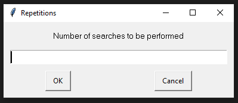
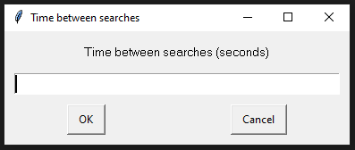

Introducing "RandomSearch", the tiny app for exploring the internet in a fun and spontaneous way!
With RandomSearch, you can search for random things, set the number of times you want to repeat and the search interval in seconds.
Discover exciting and unexpected content with you faveorite search provider. Dive into a world of random facts, cool stories, trending topics, and more.
Download archive file here


Made with Python